活动配置怎么做：活动管理下加一个「活动配置」，新的储值活动在这里选工具、填参数、审核后上线
起点是主管写的现状：碎片化、按需求独立开发、未统一考量复用／格式／规范。
新增一个菜单活动管理 › 活动配置：活动列表、新建活动、审核、进行中修改、数据
现有后台改 6 处，不做迁移功能两处停建旧类型；限时活动入口加两栏；各曝光位下拉加新活动；好康、公告重新分类
本期必需：四个工具＋三处玩家入口礼包、累充、满减、折扣；「储值活动」页签、限时活动分两个页签、公告分三类
待和主管定两件，哪种结果后台和工具都不变
- 「储值活动」页签放哪：A 银行（推荐：玩家付款时就看到优惠；与需求原文「好康改为金流／商城」一致）；B 右下活动窗口加第三个页签（三款竞品都这样放）。选 B 只是整个页签换位置。
- 右下入口叫什么：「活动」（推荐：窗口里也放签到等常驻活动）；「限时活动」（玩家熟悉）。
一、主管说的每条现状，都推到后台的一处改动
| 主管的话 | 现在的实例 | 所以要做 | 落在后台哪里 | 看图 |
|---|---|---|---|---|
| 碎片化 | 储值、商城类活动散在活动管理 21 个子菜单，加上储值活动设定、产包设定、好康设定 | 新的礼包、累充、满减、折扣活动都在一张表建和管；21 个子菜单里的现有玩法照常用，接入新入口展示（尽量） | 活动管理下新增「活动配置」；储值活动设定的五类礼包、金流活动设定的累储停止新建 | 图 1 |
| 碎片化 | 一个活动要在 3 个一级菜单、约 8 个页面各配一次 | 主入口由系统自动挂；曝光位下拉直接选到。本期：活动配置 1 处，加上要用的曝光位各 1 处（最多 5 处），不用再找研发；做成勾选自动生成后（尽量）只剩 1 处 | 新建活动 › 展示与素材；各曝光位页面的连结位置下拉 | 图 8、9、16 |
| 按需求独立开发 | 每种玩法一套后台、客户端和需求文档 | 常见储值玩法做成工具：逻辑开发一次，运营每次只填参数 | 新建活动 › 选工具 › 工具规则 | 图 2、4 |
| 按需求独立开发 | 超值礼包每包开一张单，研发每次做一张网页 | 礼包工具＋超值礼包详情页模板：价格档从储值品项、产包设定选；内容在礼包工具里填；详情页按模板生成 | 新建活动 › 礼包；玩家端详情页 | 图 14、15 |
| 复用 | 卡别在每个活动里各存一份（推断），加至尊卡拆 12 张单 | 用工具配的活动，卡别名单从系统读，加新卡不用开发；各活动的加码比例仍各自填。现有玩法本期仍各改，研发评审时提 | 新建活动 › 对象；礼包 › 卡别加码 | 图 5、14 |
| 复用 | 大厅换皮每次要客户端发版 | 改成后台换素材（大厅主题包），待研发评估；评估前不画 | 可行的话在活动管理下加一页「大厅主题」（建议，待研发评估） | — |
| 格式 | 入口、Banner、推播、排除对象、点数异动科目，每个活动各做一遍 | 一套通用设置：基本信息、对象与排除、时间、预算、展示与素材，所有工具共用 | 新建活动的各步 | 图 3、5、6、7、8 |
| 规范 | 连结位置下拉写死，新活动要研发补（如至尊回归，限时活动、大厅自动弹窗、好康三处都缺） | 活动配置建的活动自动出现在下拉里；现有玩法（如至尊回归）要等接入新入口展示（尽量）后才自动出现 | 各曝光位页面的连结位置 | 图 16 |
| 规范 | 限时活动入口最多 20 个图标，同一类只能占一个 | 右下改成活动窗口：游戏活动、平台活动两个页签，左列表不限个数；现有条目靠后台加的两栏分页签。「同类只能配一个」本期不改，研发评审时确认能否放开 | 活动管理 › 大厅限时活动入口（加两栏）；玩家端活动窗口 | 图 17、18、19 |
| 规范 | 点数异动科目每个活动都要开发 | 系统按「工具名-活动编号」自动生成 | 新建活动 › 基本信息 | 图 3 |
| 规范 | 成本只有全局提醒，没有按活动的上限，到了也不会自动停 | 每个活动设总成本上限，到了自动结束并通知；上架前另一人审核；每个活动一张数据页 | 预算与上限、审核、活动数据 | 图 7、11、13 |
二、后台长这样：运营配一个周五晚储值活动，不用找研发
例：11/06（周五）18:00–23:59，累计储值满 NT$1,000 送老币福袋、满 3,000 送富贵福袋。每周五都做：首批在列表点「复制」改时间再上；每周五自动开一期的循环时段是尽量档。图上数字为示意。
配一个周五晚累充：列表新建，填 7 步，审核后到点自动上线


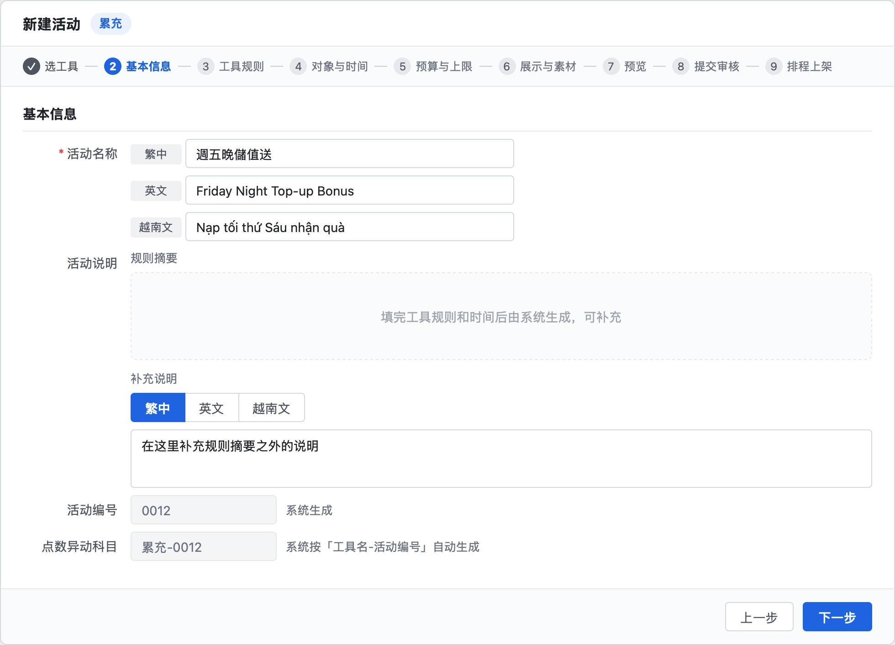

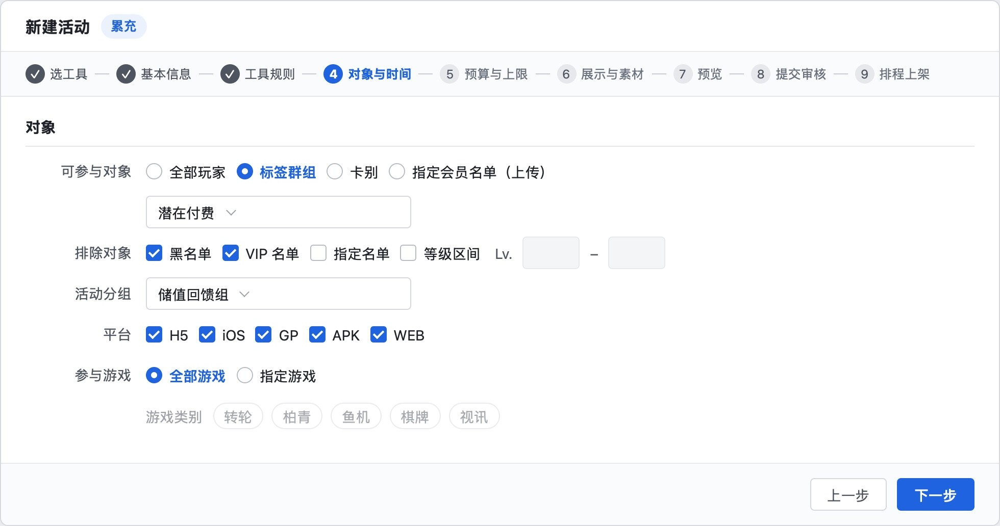
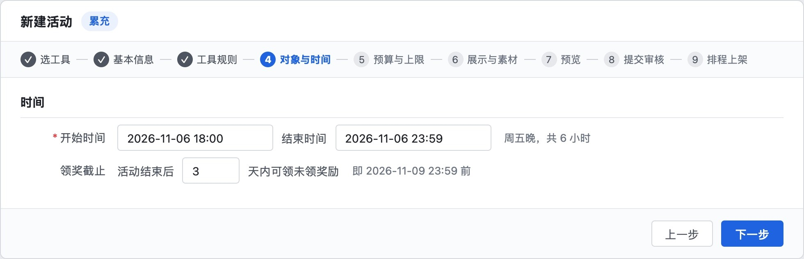
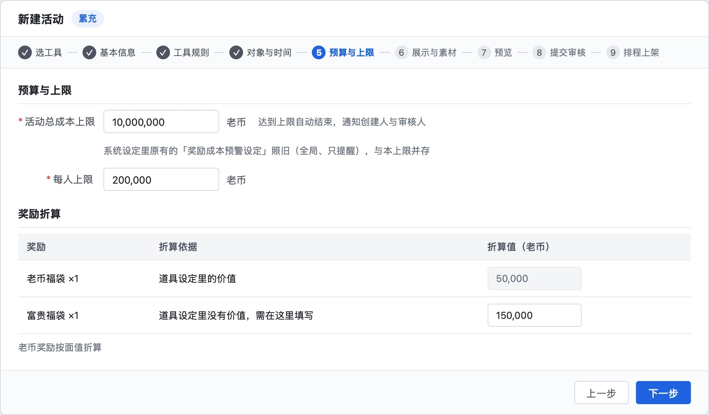
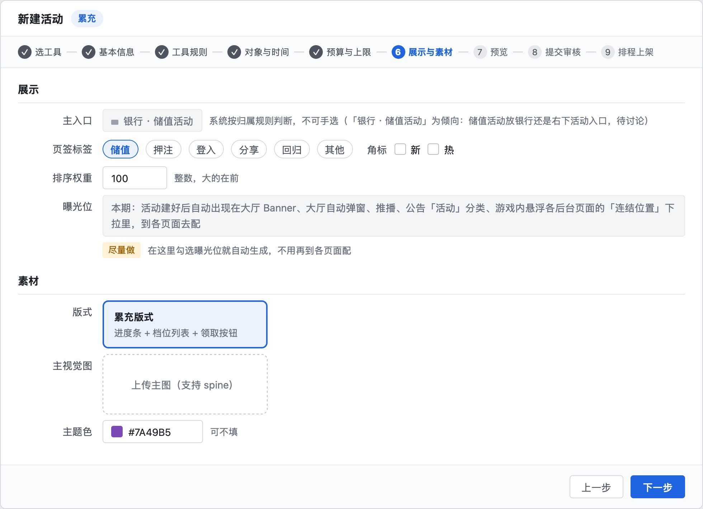

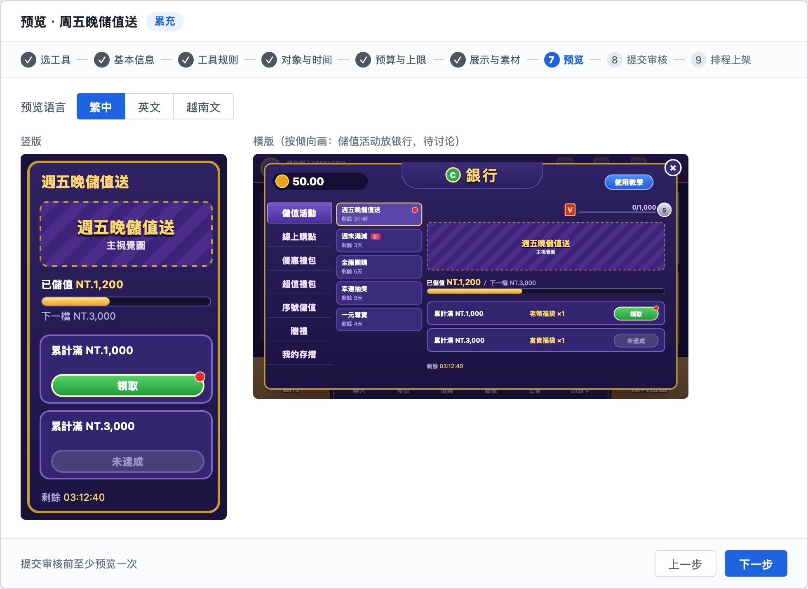
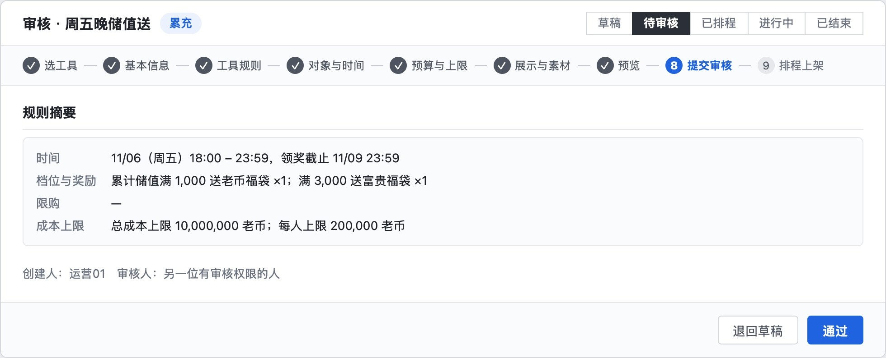
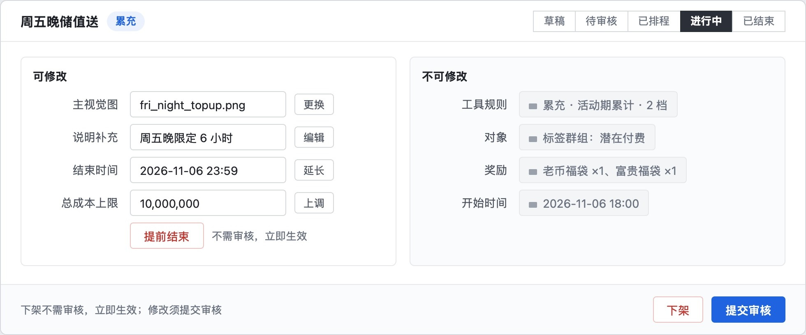

礼包：选价格档、填内容，详情页按模板生成，不再每包开发
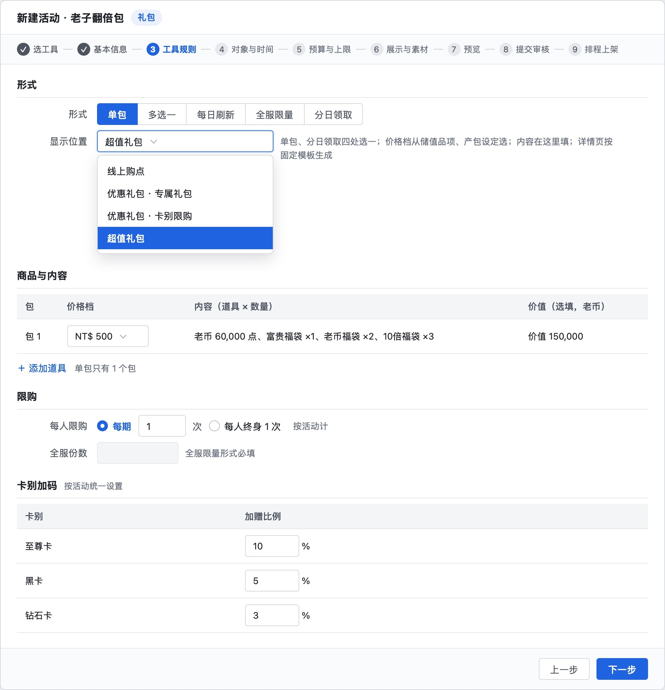

现有页面只加选项：曝光位下拉选得到新活动，限时活动入口加两栏
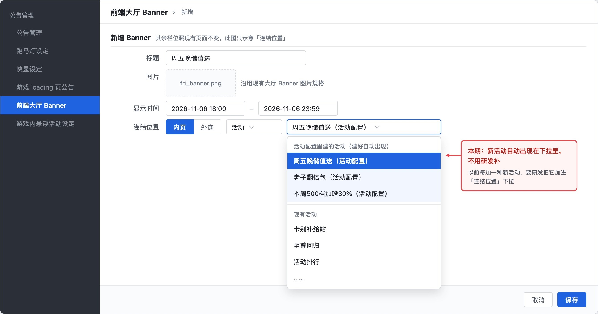
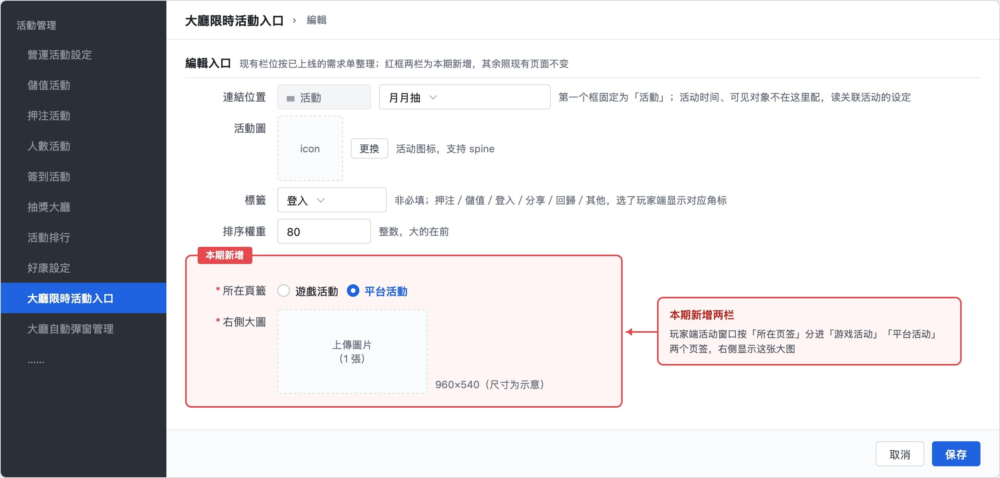
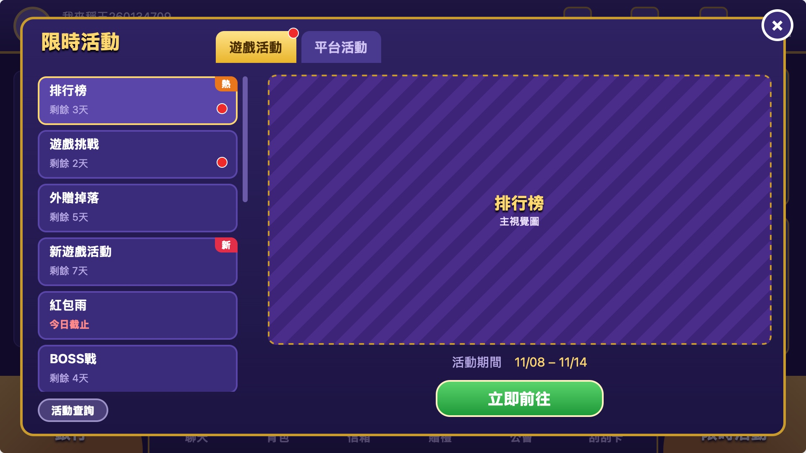

三、现有后台改 6 处，不做迁移功能，其余照旧
| 菜单 | 怎么改 |
|---|---|
| 金流储值 › 储值品项管理 › 储值活动设定 | 五类礼包（独享、三选一、每日、平台限量、专属）停止新建，已建的到期结束；储优、限时加码等在折扣上线后停建 |
| 金流储值 › 第三方金流管理 › 金流活动设定 | 累储单笔、累储累计停止新建，已建的到期结束；序号活动、礼物卡活动不变 |
| 活动管理 › 大厅限时活动入口 | 每个条目加「所在页签」（游戏活动／平台活动）和「右侧大图」（1 张） |
| 活动管理 › 好康设定 | 好康的位置让给银行；活动列表里的条目由研发逐项接入银行、限时活动、公告，不做迁移功能；赠礼序号移到银行「序号储值」旁；活动查询（获奖名单）移到活动窗口底部；这个菜单上线后保留还是停用，研发评审时定 |
| 公告管理 › 公告管理 | 分类从「热门资讯、系统公告」改成「官方、活动、其他」：系统公告归官方，热门资讯归活动 |
| 公告管理 › 前端大厅 Banner、游戏内悬浮活动设定、公告管理 › 活动（原热门资讯）；讯息管理 › 推播通知；活动管理 › 大厅自动弹窗管理 | 连结位置下拉里直接选得到活动配置建的活动；页面本身照旧 |
| 金流储值 › 储值品项设定、产包设定 | 不变；礼包工具从这里选价格档 |
| 系统设定 › 奖励成本预警设定 | 不变（全局、只提醒），和每个活动的成本上限并存 |
| 活动管理下其余子菜单（扭蛋机、红包夺宝、抽奖大厅等） | 照常用，不迁移；接入新入口展示（主入口判断、页签标签、排序）是尽量档 |
四、功能框架：新菜单、工具规则、现有后台改动
脑图代码：功能框架_脑图.md
活动配置菜单（活动管理下新增）
活动列表
- 搜索：活动名称或编号
- 筛选：状态、工具
- 列：名称、工具、主入口、时间
- 列：状态、储值金额、成本进度
- 操作：编辑、数据、复制、下架
- 新建活动
新建活动：设置
选工具
- 必需：礼包、累充、满减、折扣
- 尽量：抽奖
- 可选：团购、一元夺宝
基本信息
- 名称：繁中、英文、越南文
- 说明：系统生成，可补充
- 活动编号：系统生成
- 点数异动科目：系统生成
对象
- 可参与：全部、标签、卡别、名单
- 排除：黑名单、VIP、名单、等级
- 活动分组：同组只派一次
- 平台：H5、iOS、GP、APK、WEB
- 参与游戏：默认全部，可指定
时间
- 开始、结束时间：必填
- 领奖截止：默认结束后 3 天
- 循环：尽量，默认不循环
预算与上限
- 总成本上限：老币，必填
- 到上限：自动结束并通知
- 每人上限：老币
- 预估成本：尽量
新建活动：展示与上架
展示
- 主入口：系统判断，只读
页签标签
- 储值、押注、登入
- 分享、回归、其他
- 角标：新、热
- 排序权重：整数
- 曝光位勾选生成：尽量
素材
- 版式：按工具固定
- 主视觉：1 张，可动图
- 主题色：可不填
- 预览：竖版、横版、切语言
- 测试账号预览：尽量
- 提交审核
审核与上架
- 审核看：规则摘要、成本上限
- 同工具重叠：提示冲突
- 审核人：不能是创建人
- 状态：草稿、待审核、已排程
- 状态：进行中、已结束
- 排程：到开始时间自动上架
进行中的活动
- 可改：素材、说明
- 可改：延长结束、上调上限
- 修改：需重新审核
- 不可改：规则、对象、奖励
- 不可改：开始时间
- 提前结束、下架：立即生效
数据与记录
- 数据：曝光、打开、参与人数
- 数据：储值人数、金额、成本
- 趋势：按日，不满一天按小时
- 导出：参与名单、领奖记录
- 权限：查看、编辑、审核
- 记录：新建、修改、审核、上下架
工具规则
必需：礼包
形式与天数
- 形式：单包、多选一、每日刷新
- 形式：全服限量、分日领取
- 分日领取天数：2–30 天
显示位置
- 每日刷新、多选一：线上购点
- 全服限量：平台限量
- 单包、分日领取：四处选一
- 可选：线上购点、专属礼包
- 可选：卡别限购、超值礼包
商品与内容
- 商品：选现有储值价格档
- 内容：道具×数量
- 超值礼包详情页：固定模板
限购与加码
- 每人每期：N 次
- 首储：每人终身 1 次
- 全服份数：限量形式必填
- 卡别加码：按卡别比例
必需：累充
- 统计：活动期累计、每期累计
- 渠道：默认全部，可指定
- 档位：门槛→奖励，最多 10 档
- 领取：默认手动，可自动
必需：满减
- 渠道：默认全部，可指定
- 商品：默认全部面额，可指定
- 档位：单笔门槛→加赠，最多 5 档
- 每人每期：N 次
必需：折扣
- 商品：指定面额或礼包
- 加赠：比例或固定数量
- 按卡别：可设不同比例
- 每人：N 次
- 尽量：抽奖
- 可选：团购、一元夺宝
现有后台的改动
金流储值
储值活动设定：五类礼包停建
- 储优、限时加码：折扣上线后停建
- 已建活动：到期结束
金流活动设定：累储两类停建
- 序号、礼物卡活动：不变
- 储值品项、产包设定：不变
大厅限时活动入口：加两栏
- 所在页签：游戏活动、平台活动
- 右侧大图：1 张
好康设定
- 活动列表条目：分到三个新入口
- 赠礼序号：移到银行序号储值旁
- 活动查询：移到活动窗口底部
连结位置下拉：可选新活动
- 大厅 Banner、公告活动分类、悬浮
- 推播通知、大厅自动弹窗
公告管理：分官方、活动、其他
- 系统公告：归官方
- 热门资讯：归活动
其余子菜单：照常用
- 接入新入口展示：尽量
五、本期必需：新菜单、四个工具、三处玩家入口
必需
- 活动配置菜单：活动列表、新建（基本信息、对象、时间、预算与上限、展示与素材、预览）、复制、审核、进行中修改、数据页、权限与操作记录
- 工具：礼包（含超值礼包详情页模板）、累充、满减、折扣
- 入口：主入口自动判断；各曝光位连结位置下拉可选新活动；大厅限时活动入口加两栏
- 玩家端：银行移到左下；「储值活动」页签（累充、满减只在这里显示），倾向放银行，待和主管定；右下改成活动窗口，分游戏活动、平台活动两个页签，入口名称待和主管定；公告分官方、活动、其他
- 现有后台：储值活动设定、金流活动设定对应类型停建；好康条目由研发逐项接入银行、限时活动、公告；公告管理改分类
尽量
- 抽奖工具；曝光位勾选自动生成；循环时段（如每周五 18:00–23:59 自动开一期）；预估成本；测试账号预览；庆典专题页模板；现有玩法接入新入口展示
可选
- 团购、一元夺宝（一元夺宝先确认合规）
待研发评估
- 大厅换皮改成后台换素材、活动日历自动列出排期、敲蛋外观后台换；现有玩法改成从系统读卡别（研发评审时提）